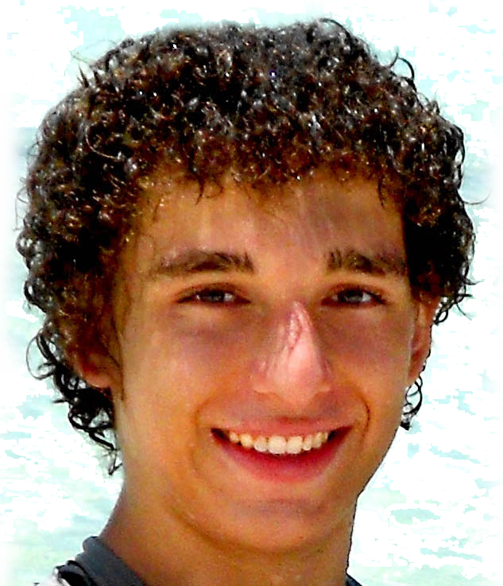
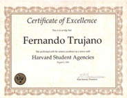
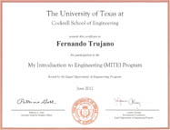
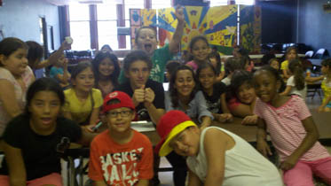

Fernando Trujano
Welcome to my Site
I am a rising freshman at MIT who is passionate about computers and technology. I am also an enthusiastic programmer, filmmaker, motion graphics artist, musician and tennis player.
My filmmaking work has earned two Remi Awards, reached the finals in national competitions and received exactly 201,136 (real time) views on YouTube. In addition, I've advanced to the state level in BPA's C++ division. During high school I've worked on a myriad of projects ranging from a short public service announcement to a fully functional underwater ROV.
I was born in Mexico City in 1994 and moved to the States in 2006. My creativity has been enriched by knowledge of both cultures.
This summer I attended a one week engineering enrichment program (MITE) at the University of Texas, followed by a one week Underwater Robotics camp (STEMSI) at TAMUCC. My summer concluded with an unforgettable seven weeks at Harvard University taking Computer Science and Expository Writing.
My Strategy
Study computer science. "Learn and experience everything you can, and use it to change the world.” - Rodney Williams
My Values
- Passion
- Creativity
- Perseverance
- Kindness
My Mission
-
Touch the lives of many through technology. Aid humanity through innovation.
Education
Stratford High School
GPA: 6.46 / 6.00 Class Rank: Top 5%
Stratford has a great Engineering Program - The Academy of Science and Engineering (ASE). You apply to the academy as a sophomore and if accepted, enroll in "Lab Research & Design". During this class we completed several fun projects such as a cardboard boat, a rube Goldberg machine and an intense crime scene investigation lab.
Eventhough Stratford lacks an AP Computer Science class, or any technologically advanced classes for that matter, I have been able to use and expand my knowledge with ASE's different projects. Our Rube Goldberg Machine for example, began with a custom android app programmed to call a number when the phone's orientation changed (this would cause another phone to vibrate and activate the next step of the machine). These short activities exposed us to the engineering way of thinking and reinforced the value of teamwork and equal cooperation between each member.
The best thing about ASE is that it continues onto senior year where we get to work on any project of our choosing. To learn about our senior project, you can visit our site at Cytrobyte.com.
Senior Classes
- Advanced Digital Filmmaking
- Honors Band
- Tennis
- AP Economics
- AP Government
- Senior Research Project
- AP Calculus BC
- AP Physics C
- AP English IV
Guthrie Center
The Harold D. Guthrie Center For Excellence is a shared campus within the school district that offers advanced, specific classes in the Career & Technical Education field. Classes at Guthrie are double blocked, meaning we attend every day. In 2009, I took one semester of Computer Tech - CompTIA A+ preparation, and one semester of Business Communications and Information Systems (BCIS). This was the year that truly exposed me to the wonders of computers and sparked my passion for technology.
As a sophomore, I enrolled in the Digital Filmmaking class where I created much of the content in my current portfolio. I am currently taking the Advanced Digital Filmmaking course. This year, I had the opportunity to produce a video for British Petroleum. The video can be found on BP's website and Guthrie's website. Since these classes are shared across the district, the available resources are much more than what our main campus could offer.
Courses Taken:
- Computer Tech - CompTIA A+ Preparation
- Business Communications and Information Systems (BCIS)
- Digital Filmmaking
- Advanced Digital Filmmaking
Harvard Summer School
This summer I had the enormous privilege of spending a semester at Harvard. Students at Harvard came from all over the world, my roommates for example, were from Georgia (country) and Brazil. This experience opened my eyes to a myriad of different cultures and taught me to see the world differently. Between classes, internships, workshops and friends, I had a very busy schedule. However, I was able to effectively manage my time by planning out my days with google calendar.
Courses Taken:
- Great Ideas in Computer Science
- Expository Writing
Activities


Robotics
In 2011, I got together with two friends and created a web site called “Cytrobyte.com”, its purpose is to get sponsor information about who we are and what we do. The site grabbed the attention of several sponsors and, after attending various interviews we accumulated $4,000.00 in grants. We collaborated to design, build, program and troubleshoot a fully functional Underwater ROV which we submitted to the 2012 MATE Underwater ROV Competition.
Our underwater robot used a combination of hardware and software to accomplish specific tasks. The robot itself used an arduino mega as its microprocessor and a control system coded by us in C#. We communicated with the arduino via UDP using a 50ft CAT 5e cable.
This invaluable experience ameliorated our engineering, teamwork, and coding skills. We placed 5th in engineering and 8th overall which was a huge accomplishment taking into account our small group of three. The technical report for Cytrobyte I can be found here. Additionally, you can click the pictures above to see a full gallery of pictures (use arrow keys to navigate).
Cytrobyte I Features
- HD pan camera
- Metal detector
- Digital Compass
- Manipulator
- Oil sucking pump
- Visual Control Station
- 6 thrusters
- Measuring Device
If you are interested in more information about the robot and would like to see more pictures, please visit our site at Cytrobyte.com
Band
I have been in marching, symphonic and honors band while in high school as well as full orchestra. During marching season, I play the mellophone and switch to french horn for concert season. Marching band especially is a very time consuming activity, we practice outside everyday from 3:30 - 5:30 (in the hot Texas weather) and perform during the football games on Fridays and Saturdays. We have earned the sweepstakes award (perfect score in marching and concert UIL) three consecutive years.
During marching season, you not only learn your sets and music, but also how to manage your time efficiently and some basic principles of discipline and leadership.
Experience
French Horn - 7 years
Mellophone - 4 years

Tennis
I have been a part of the Spartan Tennis team since I entered high school. I made the team as a freshman and have since maintained a top three spot in the team. We practice roughly 90 minutes everyday and have an uninterrupted schedule of after school and all-day tournaments. Our season runs all year long requiring us to miss several days of school. Catching up in class while maintaining constant involvement in my other extracurricular is challenging, but ultimately makes me realize the importance of time management, prioritizing and teamwork.
Programming
My school did not offer a Computer Science course and no one in my family is technologically savvy, however, I began learning C++ on my own time using the internet and a book. Two months later, I placed 2nd in BPA (Business Professionals of America) Regional C++ competition and advanced to the state level. Many friends wondered how I reached a high level in such a short period of time to which I replied with a famous quote by Steve Jobs: “The only way to do great work is to love what you do.”
Over the years I have had the opportunity to interact with a variety of different languages. I've used the following languages for these projects.
- Arduino for the ROV, various projects and my MIT TubeHack!
- Adobe ExtendScript for AudioSyncR, an After Effects Script for semi-automatic typography audio syncing!
- C++ for BPA Regional/State and HP Codewars
- HTML/CSS for websites like fertogo, Cytrobyte, and fernandotrujano
- PHP for PeerTuts and short features like these.
- Javascript and jQuery for this website, Cytrobyte and The Harvard Shop
- Java for this summer's Computer Science class and other small projects
- C# for the ROV Control Station
- Liquid during my internship at Harvard Student Agencies Rover (The Harvard Shop)
Filmmaking
In 8th grade, I began making short motion graphics for a profit. Since then, I have produced professional videos for RealEstateFanPages and British Petroleum. In my senior year I received a Silver and a Bronze Remi Award at Worldfest, an International Film Festival for the BP and Guthrie Videos (respectively). Producing videos requires excellent organization, time and patience.
Motion Graphics allow me to implement most of my activities and skills to a single final product. A great example is my second typographic music video. I used programming to automate tasks involving several layers and effects. I used my musical abilities to sync cuts and words to the song. Finally, I used my knowledge about typography and film to position the text in a pleasant way.
We are taught that filmmaking often follows Murphy's Law; "Anything that can go wrong will go wrong". Sometimes, actors forget to show up, the microphone fails or maybe the focus was a bit off. During post production, After Effects might crash, your file might get corrupted or maybe you realize you shot the whole scene wrong. While all of these events can make your life miserable, they only do so for a short moment of time. By spontaneously challenging you, these adversities force you to think creatively for different solutions and often lead to a better film. I have learned to stay calm and under pressure, a vital skill inside and outside of film.
For more information about my filmmaking work see Work>Fertogo and my Portfolio.
Tutoring
I believe the best way to understand a concept is to explain it to someone else. I've tutored people after school on subjects ranging from Spanish to Calculus. Furthermore, I continue to help people while I am at home by updating PeerTuts and answering any additional questions.
Other
11th - 12th
- ASE (Academy of Science and Engineering) - Fun engineering type labs and projects. More info under Education
- NHS (National Honor Society) - Admission based on scholarship, leadership, and service.
- NTHS - National Technical Honor Society
- JETS (Junior Engineering Technical Society) - Take the TEAMS (Tests of Engineering Aptitude, Mathematics and Science)
- SHARC (Stratford High Advanced Robotics Club) - Participate in FIRST robotics.
- Film Club - Producing short films, organizing battle of the bands
- Collegiate Challenge - College Mentorship Program
Awards
 12th grade
- Jesse H. and Mary Gibbs Jones Scholar
- Houston Golf Association (HGA) Scholar
- George and Mary Josephine Hamman Scholar
- Spring Branch Education Foundation Shantamboo Scholar
- Silver Remi at Worldfest International Film Festival
- Bronze Remi at Worldfest International Film Festival
- 1st place at KinderVision's "The Greatest Save" PSA Contest.
- Houston Chronicle Student of the Week
- 2nd Place JETS Regional Competiton
- 8th Place JETS State Competition
- Best Cinematography at Guthrie Center Film Festival
- Best Technical at Guthrie Center Film Festival
- Reel Teen Festival Winner
- Stratford High School Student of the Week
- Honor Roll
- Perfect Score (I) on UIL Solo and Ensemble Contest (Class I Solo)
- Perfect Score (I) on UIL Solo and Ensemble Contest (Class I Ensamble) + State Qualifer
- National Honor Society
- National Honor Technical Society
11th grade
- Honor Roll
- Perfect Score (I) on UIL Solo and Ensemble Contest (Class I Solo)
- 2nd place in Business Professionals of America C++ Programming Competition + State Qualifier
- 1st place in Business Professionals of America Financial Math and Analysis
- 2nd place in Business Professionals of America Computer IT concepts
- 7th place in Business Professionals of America C++ Programming state competition + National Alternate
- 4th place JETS Regional Competition.
- National Honor Society
10th grade
- Honor Roll
- Perfect Score (I) on UIL Solo and Ensemble Contest (Class I Solo)
- Nominated to take the AMC (American Mathematics Competition) Exam
- Finalist of the National Contest "World of 7 Billion" with video "You can make a difference" (Over 600 entries submitted)
- Video Production "Designed death" showed at local movie theater (Studio Movie Grill)
9th grade
- Honor Roll
- Perfect Score (I) on UIL Solo and Ensemble Contest (Class I Solo)
Work
Fertogo
In 2008, I experimented in the digital filmmaking world. Like many, I began by making silly videos with friends but soon began to show interest in special effects and motion graphics. Through the amazing internet, I learned Photoshop, Aftereffects and Vegas in my own time. Soon after, I entered a Youtube competition consisting of creating an introduction for a well established Youtuber. Not only did I win the competition, but was contacted by several Youtubers asking for an intro. This led to the founding of Fertogo.com. In this site, I shared some of my special effects and motion graphics work and placed a convenient form to request an intro (for a price of course). I organized the incoming request and set up a system of delivering the content and received payment through Paypal. I mainly used the money to further advance the quality of my films by acquiring new software or a better camera. Starting this business at such a young age allowed me to release my creativity and realize the value of money.
My work has been well received on:
- Youtube, earning exactly setMajorProtocolVersion(2); printTotalViews($yt->getuserUploads('fertogo')); ?> views and over 5000 subscribers
- Aetuts+, a popular site among filmmakers and special effects artists featured my first typography video along with the Opening Titles for AMD Conference 2009 .
- National Competition - my Public Service Announcement "You can make a difference" was selected as a finalist on population connection's national competition.
- Local Competitions - My work "Designed Death" was screened at Studio Movie Grill, a local movie theater. Additionally, my Taco Cabana video "TC Girl" was selected as a finalist in 2011.
- Competitions - My motion graphics have won me several prices from small Youtube competitions
- Companies - I produced a video for British Petroleum on the week of October 15 2012. To read more about this production please visit the Guthrie Center's website. Furthermore, during the Summer of 2011, I was contacted by a company and agreed to make a informational video about them. I had made a couple of typographic videos before, most of which took about 3 months to complete. The catch here was that they needed the video done in a weekend so they could submit it to a competition (which they won). I worked tirelessly for 48 hours and delivered this video just in time.
Harvard Student Agencies

This summer, I interned with HSA Rover, a software developer agency at Harvard University. I worked on sites like The Harvard Shop while being exposed to new languages such as jquey and liquid. It was an honor to be surrounded by such an auspicious group of people every day at the Rover office.
During my stay at Rover I designed and built The Harvard Shop's custom orders page along with the Request a Quote and Portfolio page. Additionally, I created a way for individual fraternities and sororities to order custom merchandise with their name. This includes a redesigned collections page and a link that only members have access to. Lastly, I used jquery to change the product's page size selection from a swatch to a drop down. These changes were difficult since they apply to the entire site and must look good on every product page while retaining it's original functionality. I also had to make sure my code was efficient and easy to understand for future modifications.
Volunteer
PeerTuts
2011-2012
I cofounded PeerTuts.com in efforts to help fellow students with Physics and Math.
Boy Scouts of America
2012 - 20 hours
Contributed to several Eagle Scout projects.
MECA
Summer 2011 - 173 hours
Multicultural Education and Counseling through the Arts. Troubleshoot computers, worked on their official website. Served as a camp counselor, taught and organized games for children 3-12 years old. Recommendation letter.
HFI
May 2011 - 16 hours
Healthy Family Initiatives. Revised and translated confidential documents from English to Spanish. Recommendation letter.
March of Dimes
2011 - 8 hours
Organized and classified baby item donations for the Caring Cradles event.
Grupo Alva
2009 - 40 hours
Diagnosed and troubleshoot computers. Network company computers.
Skills
Computer Programs
Computer Languages
Languages
Musical Instruments

{kind=link}
{kind=link}
{kind=link}
{kind=link}
{kind=link}
{kind=link}
{kind=link}
{kind=link}
{kind=link}
{kind=link}
{kind=link}
{kind=link}
{kind=link}
{kind=link}
{kind=link}
{kind=link}
{kind=link}
{kind=link}
{kind=link}
{kind=link}
{kind=link}
{kind=link}
{kind=link}
{kind=link}
{kind=link}
{kind=link}
{kind=link}
{kind=link}
{kind=link}
{kind=link}
{kind=link}
{kind=link}
{kind=link}
{kind=link}
{kind=link}
{kind=link}
{kind=link}
{kind=link}
{kind=link}
{kind=link}
{kind=link}
{kind=link}
{kind=link}
{kind=link}
{kind=link}
{kind=link}
{kind=link}
Contact Me
Contact form removed